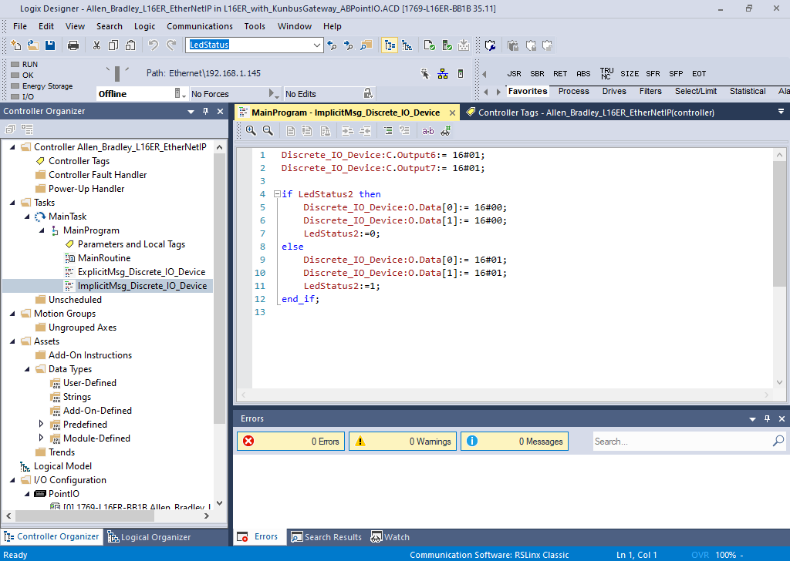
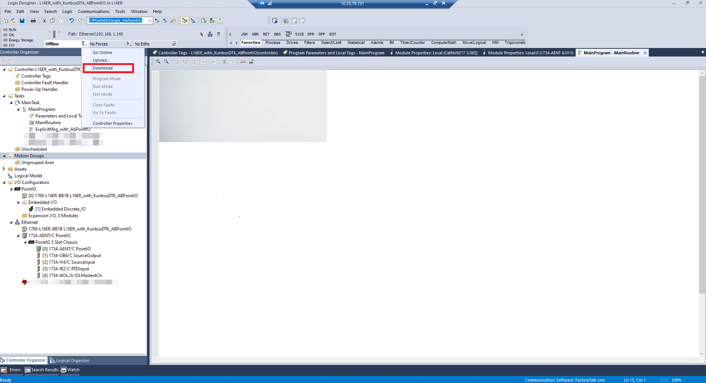
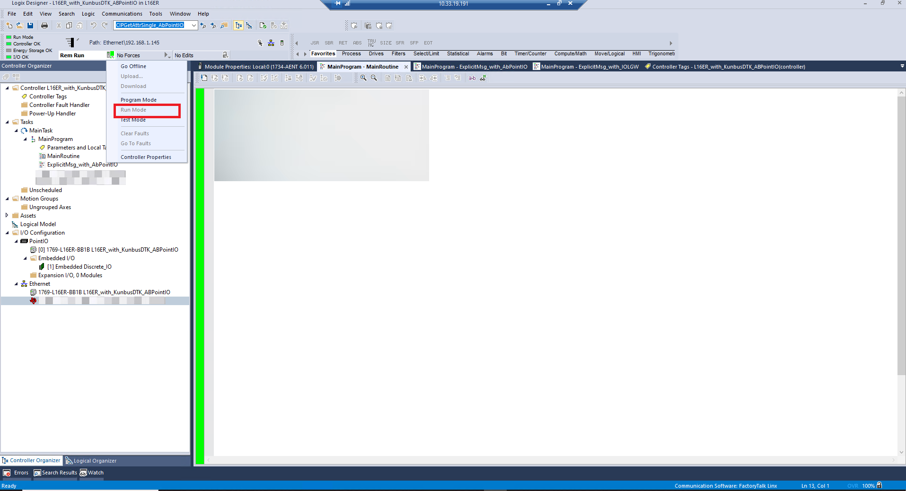
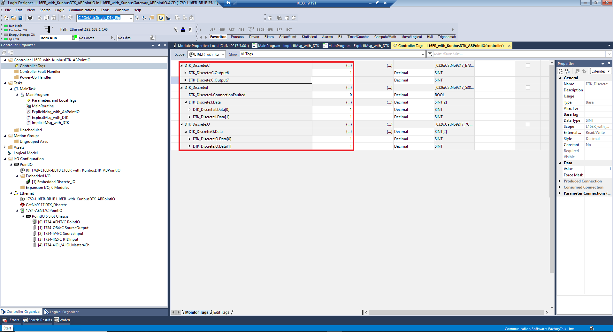

EtherNet/IP™ Adapter3.02.00 |
 |


|
EtherNet/IP™ Adapter3.02.00 |
|
|
This example is prepared to run on Allen-Bradely CompactLogix 5370 controllers to communticate with EtherNet/IP Adapter for General Purpose of Discrete I/O Device profile running on am243-lp. Explicit and Implicit messaging are implemented in this example.
Allen-Bradely CompactLogix 5370, model 1769-L16ER, controller is programmed using Studio 5000 development environment.
To add a different EDS file that is not listed in the known EDS files click on "Tools -> EDS Hardwatre Installation Tool". You need to do that if you are using EVM board instead of Launchpad becasue the EDS of Launchpad is already in the structure of this example
The project is created in Structured Text and divided into three rountines that are run from the main routine and trigerred by a timer every 3 seconds.
The subrountines are:
Sends explicit messages for Identity and TCP/IP objects as well as the Discrete Output Point (Class ID = 0x09) Object's first instance.
Sends implicit messages to Configuration Assembly to set the mode (ENABLED/DISABLED) of Discrete Output Object I/O communication. This example checks the two bytes of the Configuration Assembly and sets the Output Assemblies represented as two instances of Discrete Output Object. The results can be read on Input Assemblies represented as two instances of Discrete Input Object.
If the first byte of Configuration Assembly is set to "0" Discrete Output Object's first instance will be disabled for the I/O messaging. If it is set to "1" I/O communication for that instance will be enabled and changes on Output Assembly can be seen both on Input Assembly and LED on the board.
Example below shows that Configuration Assemblies set to "1" and enabled for both of the Discrete Output Object's instances. Industrial LEDs (LD 15 & LD 14)controlled by TPIC2810 will be toggled.

In order to download the example to the PLC, from dropdown menue click "Download".

After downloading if you are not automatically prompted to move to "Rem Run", from the dropdown menue click "Run Mode".

When online, you can observe these Implicit messages changes from Controller Tags on the left menue bar. In this example we can specifically observe "DTK_Discrete:O.Data[0]" & "DTK_Discrete:O.Data[1]" and "DTK_Discrete:I.Data[0]" & "DTK_Discrete:I.Data[1]" changing.

 1.8.17
1.8.17